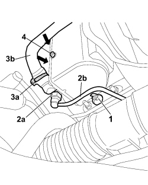
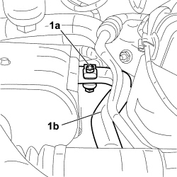
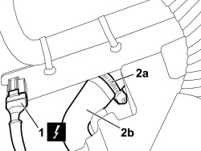
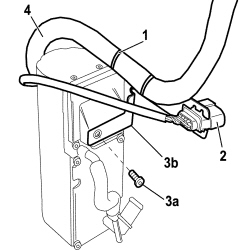

5020M10 INDEPENDENT HEATER UNIT - R R
- Path
- Procedures > 50 AUXILIARY UNITS > 5020 HEATER > 5020M SUPPLEMENTARY INDEPENDENT HEATER > 5020M10 INDEPENDENT HEATER UNIT - R R
- Kind
- repair procedure (removal / refitting; the operation number is the code)
- Applies to
- engines: 1.9 JTD 8v, 1.9 JTD 16v, 2.4 JTD 20v; all production periods
- Interactive page
- https://sloeber94.github.io/elrnDB-fCrm/en/#/194001930
Applies to: engines: 1.9 JTD 8v, 1.9 JTD 16v, 2.4 JTD 20v; all production periods
 Refitting
Refitting
 Removing
Removing- Have suitable containers ready to collect the residual engine coolant and fuel.
Applies to: engines: 1.9 JTD 8v, 1.9 JTD 16v, 2.4 JTD 20v; all production periods
Removing
Refitting- Turn the ignition key to the OFF position.
- Disconnect the negative battery terminal.
Description | Connector | |
|---|---|---|
BATTERY |
Op. 7055B54 UNDER ENGINE PROTECTION/GUARD - R.R.
Op. 0010T20 ENGINE COOLANT - CHANGE
Op. 1016A10 SOUND-PROOFING COVER - R.R
Working underneath the vehicle:
1. Release the flexible fuel supply pipe from the securing clip.
2. Working on the retaining clips, disconnect the rapid connector (2a) for the flexible fuel inlet pipe (2b) on the heater unit and remove it from the vehicle.
3 Loosen the retaining band (3a) and disconnect the flexible coolant inlet pipe (3b) on the additional indenpendent heater unit.
4. Undo the bolt fixing the additional heater unit and, using a suitable size screwdriver in the area shown by the arrow, release the support mountings.

Applies to: engines: 1.9 JTD 8v, 1.9 JTD 16v, 2.4 JTD 20v; all production periods
Working from the engine compartment:
1. Undo the fixing bolt (1a), loosen the collar securing the exhaust pipe (1b) and disconnect it from the additional independent heater.

Applies to: engines: 1.9 JTD 8v, 1.9 JTD 16v, 2.4 JTD 20v; all production periods
1. Disconnect the electrical connection for the independent heater.
Description | Connector | |
|---|---|---|
1 | ADDITIONAL HEATER CONTROL UNIT |
2. Loosen the retaining band (2a) and disconnect the flexible coolant outlet pipe (3b) from the additional indenpendent heater unit.

Applies to: engines: 1.9 JTD 8v, 1.9 JTD 16v, 2.4 JTD 20v; all production periods
- Working appropriately, release the additional heater unit, complete with air intake hose, from the suport and remove it from the vehicle releasing it upwards.
1. Remove the bands securing the air intake hose to the bracket.
2. Release the connector from the bracket.
3. Undo the fixing bolt (3a) and remove the air intake hose mounting bracket (3b) from the independent heater unit.
4. Loosen the securing collar and remove the air intake hose from the independent heater unit.

Applies to: engines: 1.9 JTD 8v, 1.9 JTD 16v, 2.4 JTD 20v; all production periods
Refitting
Removing- Place the air intke hose mounting bracket on the independent heater unit and tighten the fixing bolt.
- Connect the air intake hose to the independent heater unit and tighten the collar.
- Renew the retaining bands.
- Fit the connector to the bracket.
Working from the engine compartment:
- Position the additional heater unit on the support, attach the support mountings and tighten the fixing bolt.
- Connect the flexible coolant outlet pipe from the additional heater unit and tighten the securing band.
- Connect the electrical connection for the independent heater.
Description | Connector | |
|---|---|---|
ADDITIONAL HEATER CONTROL UNIT |
- Place the air intake hose in its original routing.
Working underneath the vehicle:
- Connect the flexible coolant inlet pipe to the additional heater unit and tighten the securing band.
- Connect the flexible fuel inlet pipe to the heater unit and attach it to the retaining clip.
- Position the exhaust pipe, connect it to the independent heater and tighten the securing collar.
Op. 7055B54 UNDER ENGINE PROTECTION/GUARD - R.R.
Working from the engine compartment:
Op. 1016A10 SOUND-PROOFING COVER - R.R
- Connect the negative battery terminal.
Description | Connector | |
|---|---|---|
BATTERY |